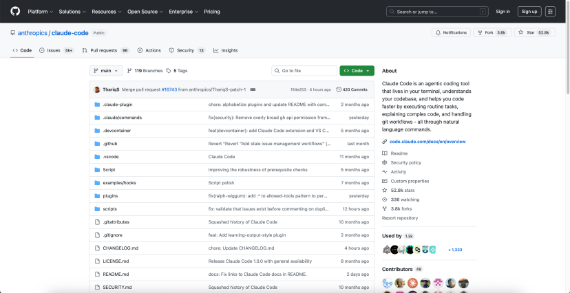
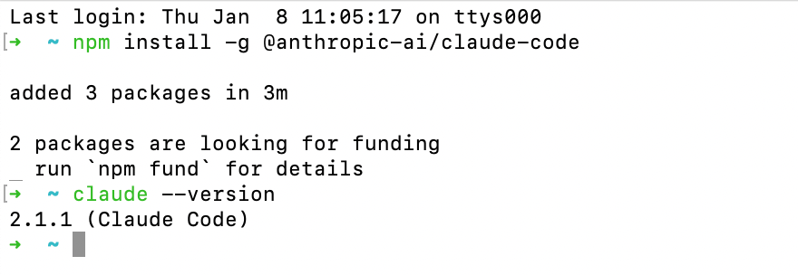
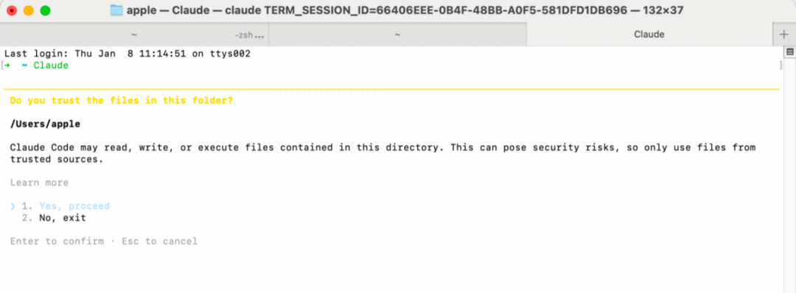
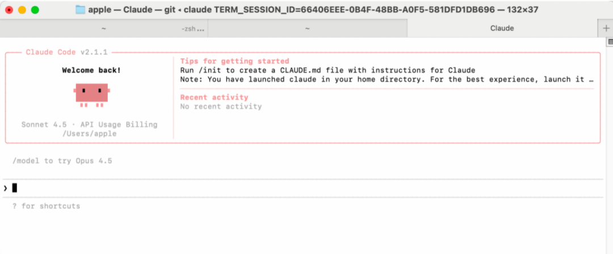
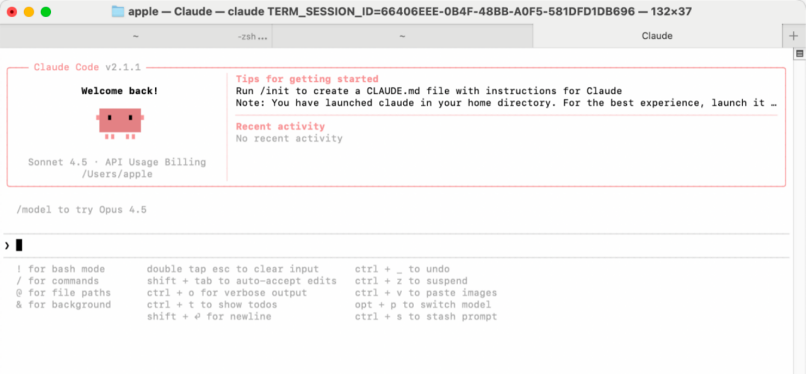
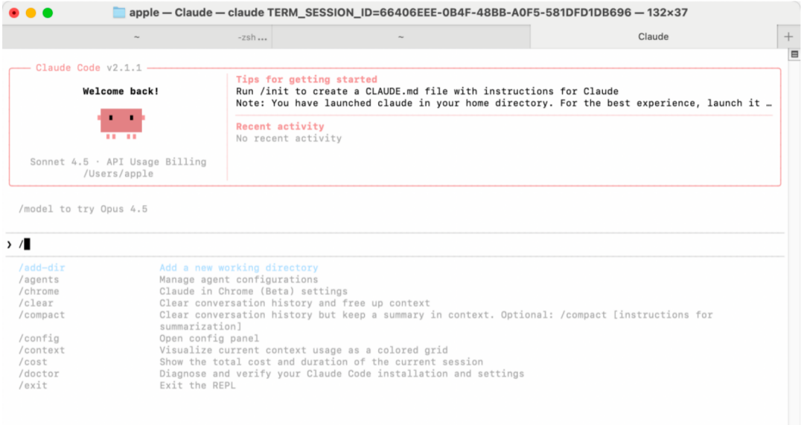
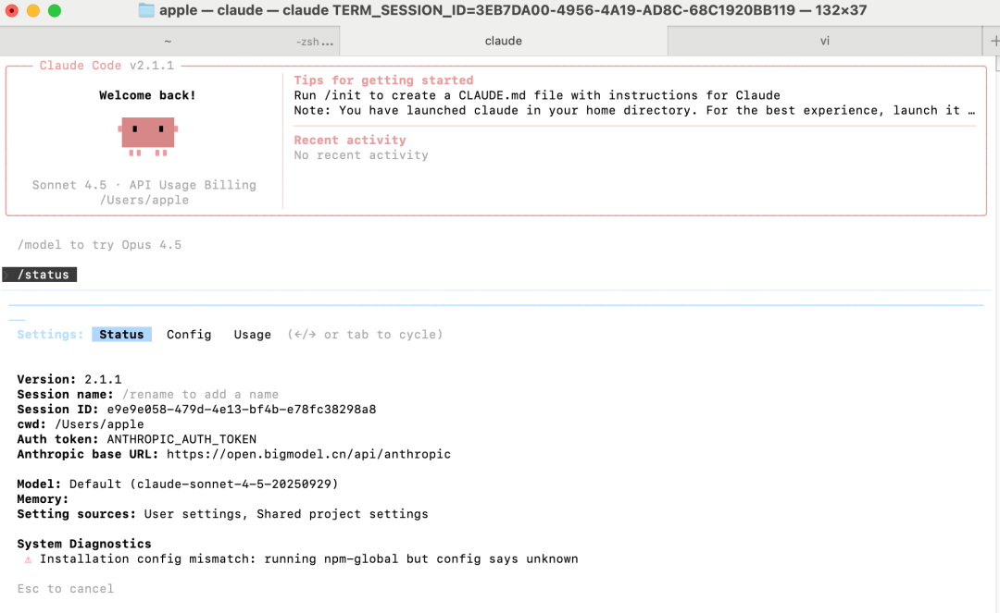
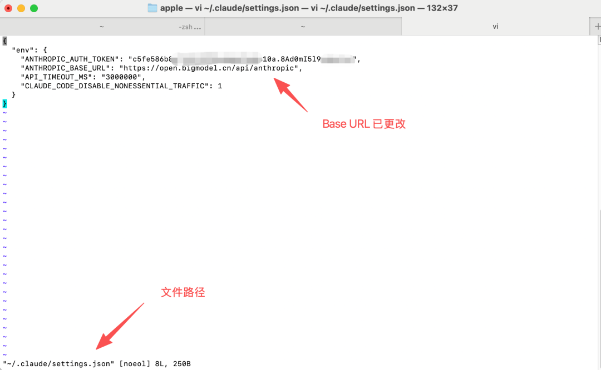

Claude Code 需要 Node.js 环境来运行
1，安装 Node.js (版本 ≥ 18.0)
# Ubuntu / Debian 用户
curl -fsSL https://deb.nodesource.com/setup_lts.x | sudo -E bash -sudo apt-get install -y nodejs
2，macOS 用户 (使用 Homebrew)
# 如果没有安装 Homebrew，请先运行此命令
/bin/bash -c "$(curl -fsSL https://raw.githubusercontent.com/Homebrew/install/HEAD/install.sh)"brew install node
3，Node版本验证
➜ ~ node -vv22.19.0➜ ~ npm -v10.9.3
curl -fsSL https://claude.ai/install.sh | bashirm https://claude.ai/install.ps1 | iexcurl -fsSL https://claude.ai/install.cmd -o install.cmd && install.cmd && del install.cmdnpm install -g @anthropic-ai/claude-code3，验证安装
# 安装后，可以运行以下命令来验证是否安装成功
claude --version
# 启动claude
输入：claude



如果对模型的使用不是很苛刻，不一定非得用claude opus 4.5的thinking模型，claude最强模型太贵，而且对于国内用户来说不能直接使用。
这里推荐两个国产大模型：GLM 4.7、minimax M2.1，以下是两个主流方案的详细配置，这也是实现国内使用的关键。
https://open.bigmodel.cn/curl -O "https://cdn.bigmodel.cn/install/claude_code_env.sh" && bash ./claude_code_env.sh

Mac: ~/.claude/settings.jsonWindows: C:\Users\你的用户名\.claude\settings.json
{"env": {"ANTHROPIC_BASE_URL": "https://api.minimaxi.com/anthropic","ANTHROPIC_AUTH_TOKEN": "<MINIMAX_API_KEY>","ANTHROPIC_MODEL": "MiniMax-M2.1","ANTHROPIC_SMALL_FAST_MODEL": "MiniMax-M2.1","ANTHROPIC_DEFAULT_SONNET_MODEL": "MiniMax-M2.1"}}